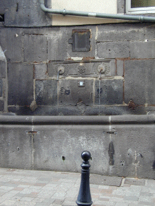

Cette fontaine, en bas de la rue du Port, tout près de l'église Notre Dame du Port (magnifique, art roman, XII siècle), a été remise en eau récemment, comme beaucoup d'autres à Clermont. Pendant toute une période elles étaient remplies de terre et plantées de fleurs en été.